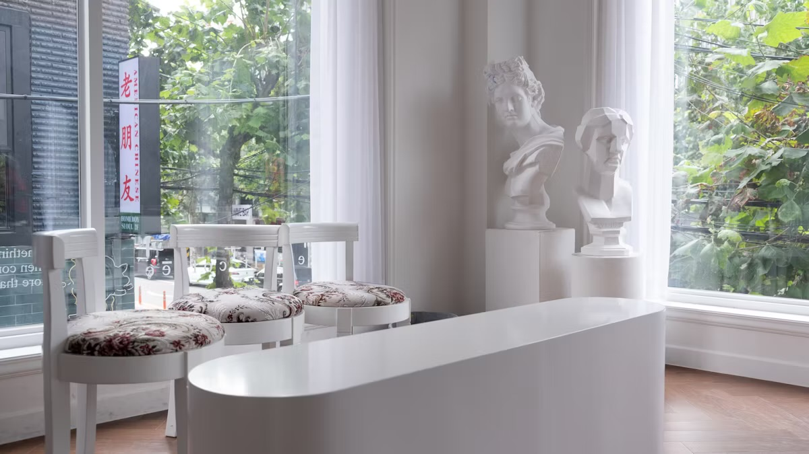
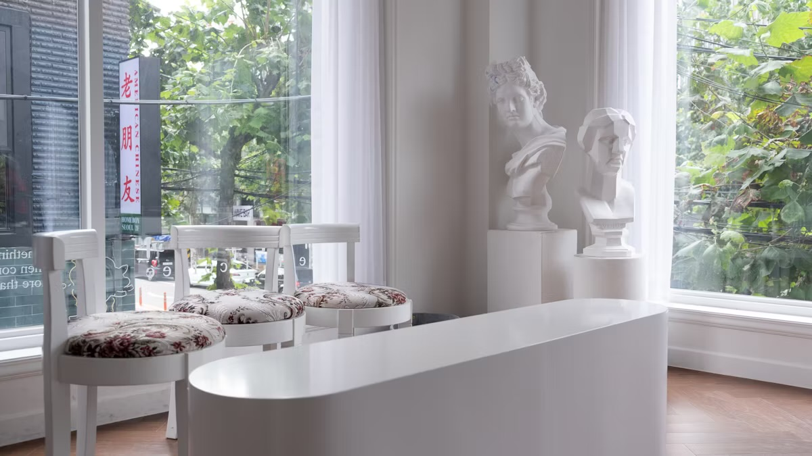

清潔感・丁寧・安心を大切にした、街の相談しやすいクリニック。
1.丁寧な診察
一人ひとりに合わせた治療を大切にしています。
2.女性医師在籍で安心
デリケートなお悩みも気軽に相談できます。
3.駅から徒歩2分の好アクセス
忙しい人でも通いやすい立地。

 

かぜ症状、発熱、胃腸トラブルなど、日常の体調不良を幅広く診療します。
「ちょっと気になる」レベルでも気軽に相談できます。
湿疹、かゆみ、ニキビ、乾燥肌などのお肌の悩みに対応します。
敏感肌の方でも安心して通える治療を心がけています。
生理のお悩み、更年期症状、冷えやむくみなど、女性特有の不調に寄り添います。
女性医師が在籍しており、相談しやすい環境です。
花粉症、アトピー、鼻炎、食物アレルギーなどを検査・治療します。
症状に合わせて無理のないケアをご提案します。
シミ・くすみ・毛穴などの“ちょっと整えたい”美容のお悩みに対応します。
強い施術はせず、自然にやさしく肌を整えるメニューが中心です。

東京医科大学を卒業後、都内の総合病院で10年間、内科診療に従事。
内科専門医として、日々の体調不良から慢性的なお悩みまで幅広く対応してきました。
患者さん一人ひとりの気持ちに丁寧に寄り添い、
「小さな不安でも相談できる医師でありたい」という思いを大切にしています。
些細なことでも、どうぞ気兼ねなくご相談ください。
24時間いつでも簡単に予約できます。
ご希望の日時を選ぶだけで、来院準備がスムーズです。
受付スタッフが丁寧にご案内します。
初めての方でも迷わないようにサポートします。
医師が症状や不調について丁寧にお話を伺い、
一人ひとりに合わせた最適な治療をご提案します。
薬の説明、治療後の注意点などをお伝えします。
気になることがあれば、いつでもご相談いただけます。
| 住所 | 〒107-0061 東京都港区北青山3丁目4−XX 青山Sビル 6F （表参道駅 A2出口より徒歩2分） |
|---|---|
| 電話番号 | 03-6800-XXXX |
| 診療時間 | 月・火・木・金 9:00〜18:00 土 9:00〜13:00 |
| 休診日 | 水曜・日曜 |
表参道駅A2出口から徒歩2分の、白い外観のビル6階です。
エレベーターを降りてすぐ左手に入り口があります。
初めての方でもわかりやすい、
24時間対応のWEB予約をご利用いただけます。